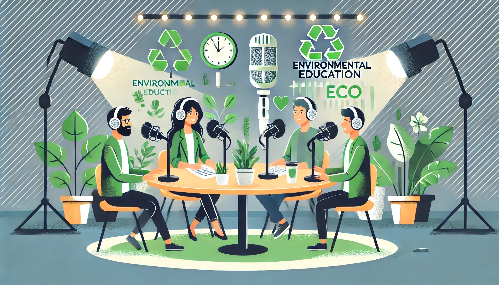

Podcast: Revisiones de Ofertas Académicas en Entornos Virtuales
Bienvenido a nuestro podcast educativo, donde exploramos diferentes aspectos de la educación ambiental y analizamos las mejores ofertas académicas disponibles en entornos virtuales. Cada episodio está diseñado para mantenerte informado sobre las últimas tendencias en educación ambiental en línea, ponte comodo y disfruta!!!.
ltimo Episodio

Episodio 11: El Cambio Climático y la Educación Ambiental
En este episodio, exploramos el impacto del cambio climático en la educación ambiental, y cómo las plataformas virtuales pueden contribuir a la educación ambiental.
Episodios Anteriores

Episodio 10: Plataformas de Aprendizaje Ambiental
Duración: 38:45
Comentarios y Sugerencias